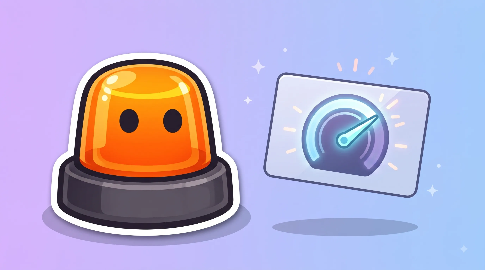
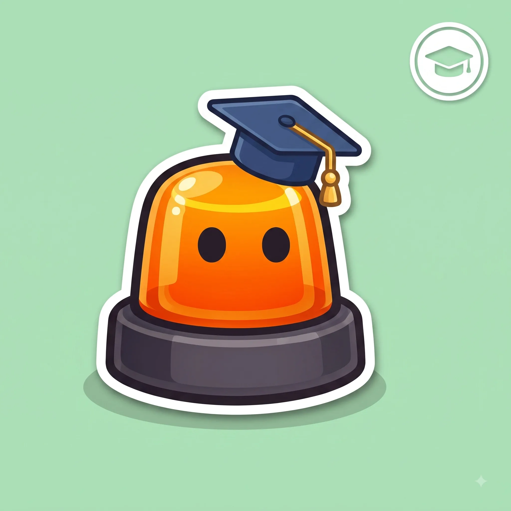

Esto es el repaso. Para aprobar a la primera, hace falta algo más.
Tests oficiales, modo examen cronometrado y tu progreso guardado.

Cómo funciona el sistema de puntos y qué te los quita.
Lo haces tú, antes de quedarte a 0
Ocurre automáticamente al llegar a 0 puntos
| Curso voluntario | Perder todos los puntos | |
|---|---|---|
| ¿Cuándo se hace? | Cuando quieras, antes de perder el carnet | Obligatorio, después de quedarte a 0 |
| Puntos que recuperas | Hasta 6 puntos | 8 puntos, tras superar el curso y el examen |
| ¿Puedes conducir mientras tanto? | Sí, no pierdes el carnet | No, el permiso pierde su vigencia |
| Otro requisito | Ninguno adicional | Esperar 6 meses (3 si eres profesional) y aprobar de nuevo el examen teórico |
De novel a 12, en 2 años sin nada.
Si empiezas con 8 puntos y pasas 2 años sin infracciones, subes automáticamente a 12.
El móvil es el que más caro sale.
Coger el móvil conduciendo quita 6 puntos, más que casi cualquier otra infracción habitual.
No esperes a llegar a 0.
El curso voluntario de sensibilización te devuelve hasta 6 puntos sin tener que perder el carnet ni volver a examinarte.

La forma y el color ya te dicen el mensaje antes de leer nada.
A más velocidad, la frenada crece mucho más rápido que la reacción.
Líneas, flechas y símbolos pintados en el asfalto, con su propio código.
Las reglas base que deciden por ti cuando no hay ninguna señal.
Cuándo, cómo y dónde se puede adelantar con seguridad.
Quién pasa primero en cruces y glorietas.
Incorporaciones, carriles y normas específicas de vías rápidas.
Tasas máximas y por qué te la juegas más de lo que crees.
Lo mínimo que debes revisar antes de coger el coche.
Proteger, avisar y socorrer, en ese orden.
Las situaciones que no siguen la norma "de manual".
Tests oficiales, modo examen cronometrado y tu progreso guardado.